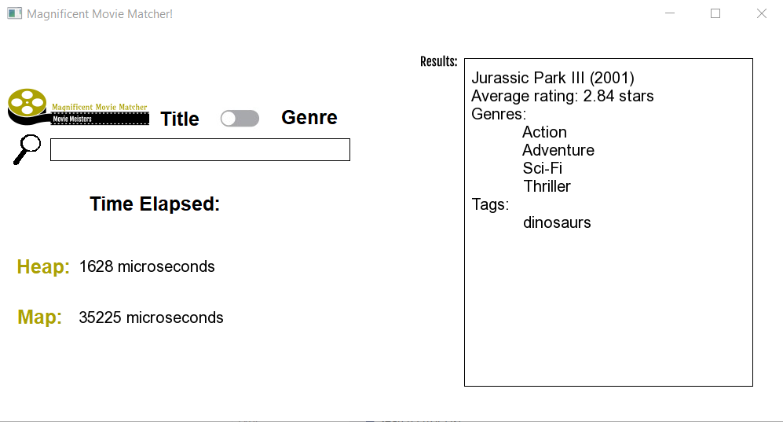
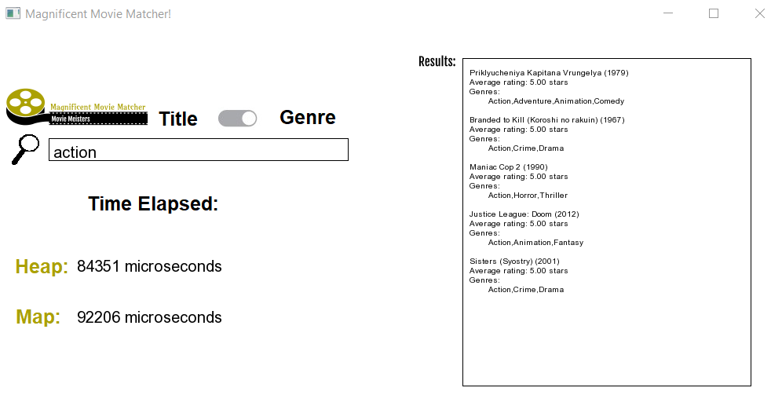

Movie Matcher
Assignment Description
The assignment for this project was to compare the performance of two data structures. I led a
team of myself and two other classmates. Together we created this application to provide
information on movies and suggest movie titles based on genres and key words.
To create the GUI, we used Simple and Fast Multimedia Library (SFML). SFML is essentially a hardware
abstraction API. It allows the programmer to easily render assets using C++ library. While SFML
is not geared toward this kind of project, this was only our second project that was not solely
command line. By creating our own assests, we were able to use technology we were already familiar
with from a previous project.
About the Data Structures
We compared the two data structures below based on the time it took to retreive the seach results.
-
Heap: The slower data structure we used as a max heap ordered by ID. It was
implemented using the priority_queue class in the C++ standard library. Its search
has a time complexity of O(n).
-
Map: The faster data structure we used was a map, using the C++ standard library
map with the ID as the key. This map is usually implemented as a red-black tree, which has
a search time complexity of O(logn).
Project Structure
Classes included Movie, Rating, Storage, and Background.
Class diagram to come.
Below are screenshots of the finished product.

